CECscraper is an open source tool specifically designed for webscraping the data from the website of Central Election Commission (CEC, CIK). The package helps to implement a wide range of webscraping tasks related to different types of electoral data. The package's flexibility is stemming from its "constructor" principle: any webscraping task can be divided into a series of steps technically supported by the package's functions. Compliance with ethical standards of webscraping is left to user's discretion.
The webscraping algorithm consists of the building blocs expressed in the package's functions. The scraping procedure is composed of two stages. On the first stage the user creates the data frame via the set of URL extraction functions, which includes target URLs and links (attributes directly linked to URLs), as well as attributes inherited from previous stages (called level or info). On the second stage, based on the URLs acquired from the first stage, the user builds the data frame containing electoral data via special data building function.
To give you a taste of how easy the webscraping becomes, let us webscrape the precinct-level data for Moscow City Council election held on September 2019. With this task in mind the sequence of scraping steps will be as follows.
First, load three libraries into the current R session. Then, open http://www.izbirkom.ru in your web browser, and search for "Moscow City Council election, September 2019" to find the root URL for this election.
library(CECscraper)
library(dplyr)
library(rvest)
Second, click on the election link and copy-paste election's URL "http://www.vybory.izbirkom.ru/region/izbirkom?action=show&vrn=27720002327736®ion=77&prver=0&pronetvd=null" into a variable root_url
root_url <- "http://www.vybory.izbirkom.ru/region/izbirkom?action=show&vrn=27720002327736®ion=77&prver=0&pronetvd=null"
Third, consider that CEC's hierarchy of URLs takes the following form general election results -> election results for OIKs/SMDs -> election results for rayons -> election results for precincts. Given that right now we find ourselves on the general election results page, we can proceed by obtaining URLs for OIKs. There are different ways of doing this. For instance, we can obtain a set of URLs for OIKs simply by clicking on the drop-down menu of "Нижестоящие избирательные комиссии". This menu can be used to extract links and URLs of interest. Let's extract them from the root_url page via the listURLextractor() function from root_url page.
oiks_urls <- listURLextractor(root_url)
oiks_urls[1,]
Notice that in our data the link variable directly refers to the scraped URLs. Check if we've collected the right set of URLs by copy-pasting one of the scraped URLs into your web browser. Once the webpage is open in the web-browser, try to select items from a drop-down menu of "Нижестоящие избирательные комиссии". That would give us access to URLs for rayons (i.e. units nested within OIKs). Let's follow this logic and scrape appropriate rayons' URLs from oiks_urls using the listURLextractor().
rayons_urls <- listURLextractor(oiks_urls)
rayons_urls[1,]
Again, we need to check, if the right set of URLs was collected by copy-pasting one of the scraped URLs into your web browser. Note that for rayons_url the links for OIKs and other auxiliary information are recorded in the level variables. The newly added link variable now contains the link information attributed to URLs. This cumulative feature of URL extraction functions enables us to accumulate auxiliary data from the previous extraction stages or levels.
Notice that since we are dealing with nested URLs, we can simplify our previous code by resorting to nested functions:
rayons_urls <- listURLextractor( #extract rayons
listURLextractor(root_url) #extract OIKs
)
Again, to check if we've collected the right set of URLs simply copy-paste one of the scraped URLs into the web browser. Now it appears that we can't access the precinct-level data without clicking on the link "сайт избирательной комиссии субъекта Российской Федерации".
Fourth, let's scrape all URLs associated with the link "сайт избирательной комиссии субъекта Российской Федерации" for all rayons_urls (such scraping would be equivalent to actual clicking on the link).
Note that here all we need is just to copy-paste the link from the website "сайт избирательной комиссии субъекта Российской Федерации", and then properly transliterate it via the package's internal transliterator, tranliterate() function.
rayons_urls2 <- rowURLextractor(rayons_urls, transliterate("сайт избирательной комиссии субъекта Российской Федерации"))
rayons_urls2[1,]
As always, we need to check if extracted URLs are OK by copy-pasting one of the scraped URLs into the web browser.
Fifth, after choosing the items from a drop-down menu of "Нижестоящие избирательные комиссии", we are able to access the precinct-level data. So, in this case let's use the listURLextractor() to collect URLs for precincts from the rayons_urls2 object:
uiks_urls <- listURLextractor(rayons_urls2)
Check if URLs in uiks_urls for precincts are OK by copy-pasting one of the URLs into the web browser.
Sixth, to access the precinct-level data we want to click on the link "Результаты выборов по одномандатному (многомандатному) округу". In other words, we would need to use rowURLextractor() again. To speed up execution of our example, let's limit our webscraping example to the first 200 observations.
uiks_urlsD <- rowURLextractor(uiks_urls[1:200, ], transliterate("Результаты выборов по одномандатному (многомандатному) округу"))
Check if uiks_urlsD provide you with direct access to the precinct-level data by copy-pasting one of the URLs into your web browser.
Seventh, now we are ready to scrape precinct-level data using the dataBuilder() function. We need to keep in mind several important parameters when using this function:
bylevel is defined by level or info variables, and organizes the output as a list of SMDs (if level wasn't set up, our algorithm would erroneously attempt to merge all SMD data together). The uiks_urlsD data frame contains variable level1 defining SMD per precinct.
typedata="slow", whereas slow implies that the scraper visits all precinct-level pages to extract all the relevant data, i.e. webscraping is quite slow; fast implies scraping from the "Summary table of electoral results" with precinct-level data available per rayon-page, i.e. webscraping is fast (See Tips for efficient webscraping).
dname=TRUE, since we care about the names of SMD candidates we need to set this parameter to TRUE. Quite often column names are automatically assigned basic names: for ballot counts "C1...Cn" and for candidates/parties) "P1...Pn".
Let's scrape the first 200 rows of our data.
data_uiks <- dataBuilder(uiks_urlsD, bylevel="level1", typedata = "slow", dnames = TRUE)
names(data_uiks$data)
Eighth, the data is a list of data frames defined by variable level1. To merge all the data together one needs to apply dataMerger() with parameter byrow = TRUE, i.e. the data needs to be merged by row.
data_uiks_merged <- dataMerger(data_uiks, byrow = TRUE)
To access the webscraped data:
edit(data_uiks_merged$data)
Note that we've just described only one webscraping path out of several possible paths. We could implement our webscraping algorithm in a slightly different manner:
root_url <- "http://www.vybory.izbirkom.ru/region/izbirkom?action=show&vrn=27720002327736®ion=77&prver=0&pronetvd=null".
root_urlsD <- rowURLextractor(root_url, transliterate("Данные о предварительных итогах голосования по одномандатному (многомандатному) округу"))
oiks_urls <- listURLextractor(root_urlsD)
rayons_urls <- listURLextractor(oiks_urls)
rayons_urls2 <- rowURLextractor(rayons_urls, transliterate("сайт избирательной комиссии субъекта Российской Федерации"))
uiks_urls <- listURLextractor(rayons_urls2)
data_uiks <- dataBuilder(uiks_urls[1:100,], bylevel="level2", typedata = "slow", dnames = TRUE)
data_uiks_merged <- dataMerger(data_uiks, byrow = TRUE)
#an alternative with pipe operator
library(dplyr)
data_uiks<- rowURLextractor(root_url, transliterate("Данные о предварительных итогах голосования по одномандатному (многомандатному) округу"))%>%
listURLextractor() %>%
listURLextractor() %>%
rowURLextractor(transliterate("сайт избирательной комиссии субъекта Российской Федерации")) %>%
listURLextractor() %>%
dataBuilder(uiks_urls, bylevel="level2", typedata = "slow", dnames = TRUE) %>%
dataMerger(byrow = TRUE)
The description of the third webscraping path using fast method is provided in Task 3.
fileURLextractor (html_file, tabextract = NULL, hashid = FALSE)
This function extracts election-related links and urls from an html page of the Central Election Commission.
listURLextractor (x)
This function extracts links and urls from the lists or menus.
rowURLextractor (x, item, select = 1)
This function extracts the links and urls from the webpage.
dataBuilder (x, bylevel = NULL, ttime = FALSE, typedata = "slow", dnames = FALSE, tabextract = NULL, savetodir = "")
This function builds the data frame from URLs or listURLextractor/rowURLextractor objects.
dataMerger(x, byrow = TRUE)
This function merges the list of data objects together.
eftFormatter(x, Nvalid = "CEC", levels = TRUE)
This function reformats the data for its use with Election Forensics Toolkit.
transliterate(v)
Returns transliterated expression.
scrapeCandidates(x, tabextract = NULL, savetodir = "")
This function extracts the candidate-related data from the webpages.
Long-Path Approach vs. Short-Path Approach
Long-Path approach assumes that URL accumulation starts with fileURLextractor() function. In other words, after initial data search using the CEC website, all search results are expected to be saved into a single html file that would be used by fileURLextractor() function. In contrast, the short-path approach assumes that the user can feed URLs directly into the list and row extraction functions without resorting to fileURLextractor() function (this approach reduces the number of steps, therefore it is called "short"). The latter approach, however, may prevent the user from getting certain level attributes like the date of election or election-specific hashids required for unique election identifiers.
Automated Webscraping vs. Looping
With the help of dataBuilder() it is possible to webscrape literary hundreds of elections and collect data across thousands of locations, but this can also drastically increase the chances of arbitrary errors in one of the elections and high probability of losing all previously scraped data. If the user attempts to webscrape many elections at once, a more prudent approach would be to place CECscraper functions within the loop and save the data as R objects using saveRDS() function in R.
Slow Webscraping vs. Fast Webscraping
On the website of the Central Election Commission electoral data is provided in two different formats: Rezul'taty vyborov (Election results) and Svodnaya tablitsa rezul'tatov vyborov (Summary table of election results). If the first format is taking relatively long time to scrape (it contains deeper data structure with less data per page), the second format is much faster (it contains shallower data structure with more information per page). Both approaches "slow" or "fast" can be used interchangeably, but slow webscraping can be more error prone.
Table Search Automation vs. Manual Selection
Both dataBuilder() and scrapeCandidates() functions contain in-built detection algorithm designed to automatically select the table used for data extraction. The webpage can embed more than a dozen of tables and subtables. An error message produced by dataBuilder() or scrapeCandidates() often results from algorithm's failure to detect correct "extractable" table. In that case, the user needs to set a table number via tabextract parameter manually by applying the trial-and-error approach.
Transliteration
All Cyrillic characters are internally transliterated. In order to use rowURLextractor() efficiently, the user needs to transliterate Cyrillic text via the transliterate() function.
Let’s use the short-path approach by feeding root URL into a set of URL extractor functions. This task can be broken down into a sequence of steps:
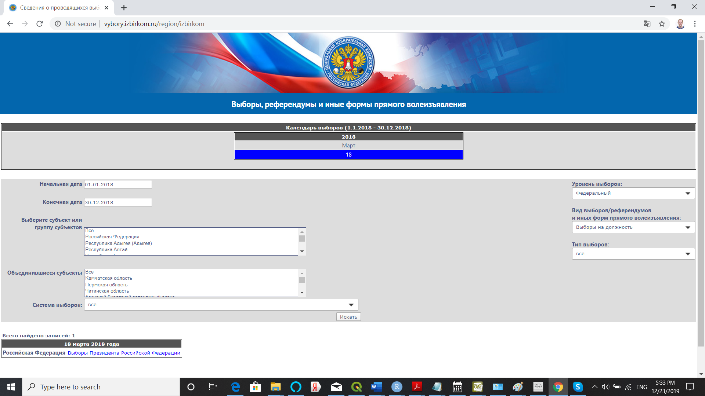
#Code Fragment
library(CECscraper)
url<-"http://www.vybory.izbirkom.ru/region/izbirkom?action=show&global=1&vrn=100100084849062®ion=0&prver=0&pronetvd=null" #See Picture 1
res1 <- rowURLextractor(url, transliterate("Результаты выборов"), select = 1) #See Picture 2
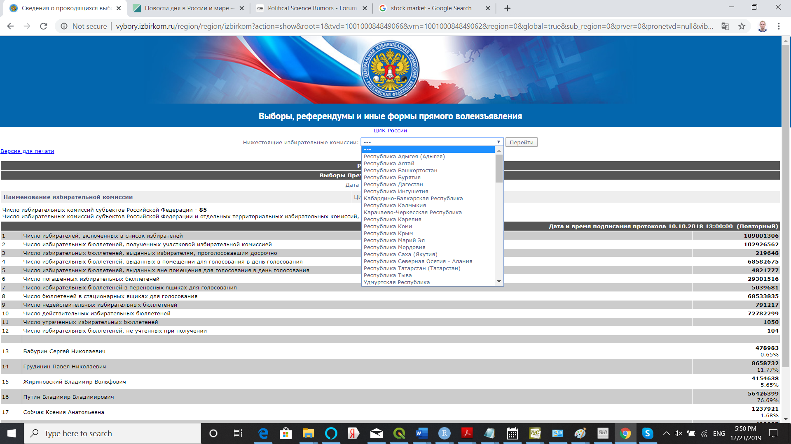
#Code Fragment
res2 <- listURLextractor(res1) #See Picture 3
res3 <- dataBuilder(res2, ttime = FALSE, typedata = "slow", dnames = TRUE)
View(res3$data)
#Full code
library(CECscraper)
url<-"http://www.vybory.izbirkom.ru/region/izbirkom?action=show&global=1&vrn=100100084849062®ion=0&prver=0&pronetvd=null" #See Picture 1
res1 <- rowURLextractor(url, transliterate("Результаты выборов"), select = 1) #See Picture 2
res2 <- listURLextractor(res1) #See Picture 3
res3 <- dataBuilder(res2, ttime = FALSE, typedata = "slow", dnames = TRUE)
View(res3$data)
Since we need to download many elections it is more convenient to use the long-path approach.
Picture 4 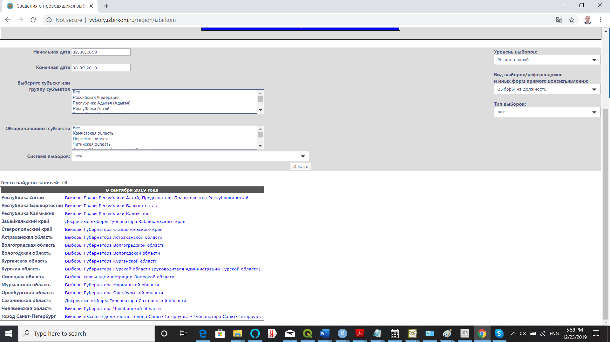
Picture 5 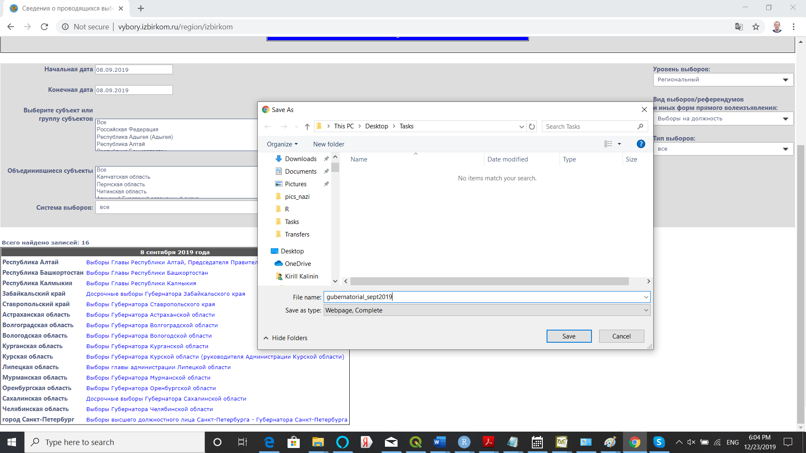
#Code Fragment
library(CECscraper)
library(rvest)
webpage <- read_html("Inst/gubernatorial_sept2019.html") #See Picture 4 and Picture 5
res1 <- fileURLextractor(webpage, hashid = TRUE)
Picture 6 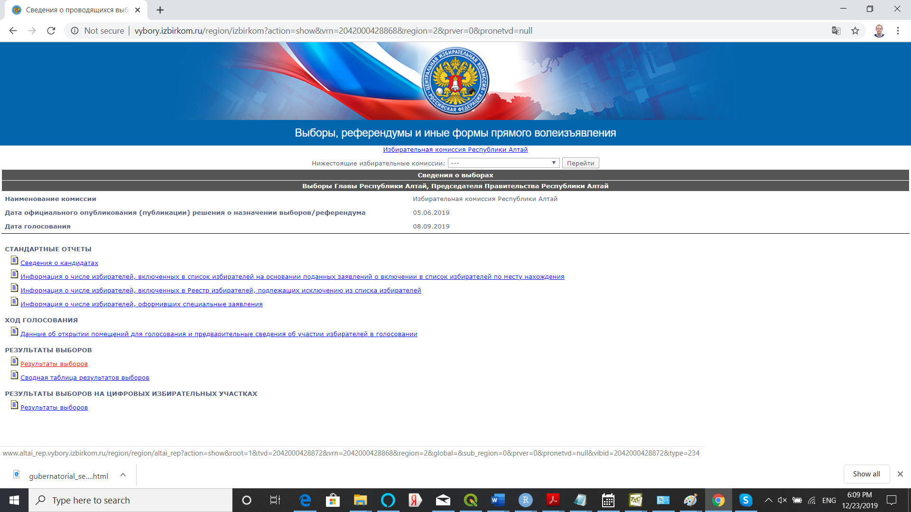
#Code Fragment
res2 <- rowURLextractor(res1, transliterate("Результаты выборов"), select = 1) #See Picture 6
res3 <- dataBuilder(res2, ttime = FALSE, typedata = "slow", dnames = TRUE, bylevel="level2")
names(res3$data)
res4 <- dataMerger(res3, byrow = TRUE)
View(res4$data)
#Full code
library(CECscraper)
library(rvest)
webpage <- read_html("Inst/gubernatorial_sept2019.html") #See Picture 4 and Picture 5
res1 <- fileURLextractor(webpage, hashid = TRUE)
res2 <- rowURLextractor(res1, transliterate("Результаты выборов"), select = 1) #See Picture 6
res3 <- dataBuilder(res2, ttime = FALSE, typedata = "slow", dnames = TRUE, bylevel="level2")
names(res3$data)
res4 <- dataMerger(res3, byrow = TRUE)
View(res4$data)
Picture 7 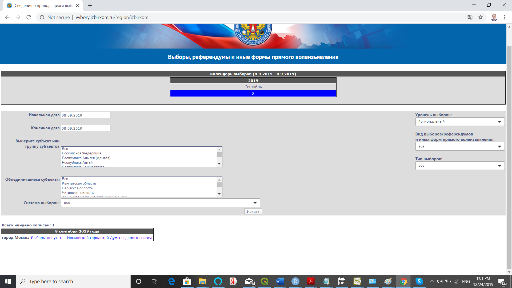
Picture 8 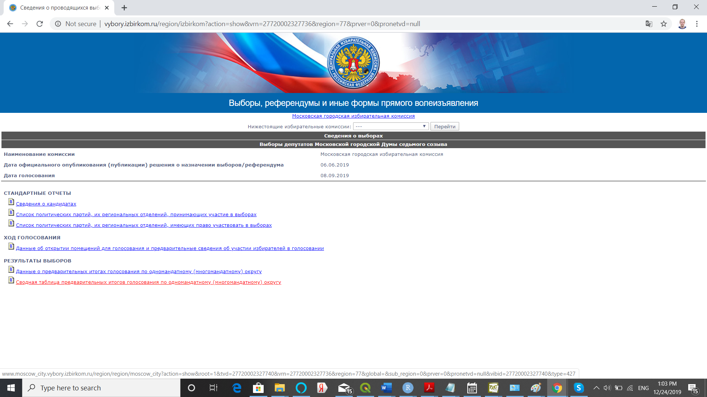
#Code Fragment
library(CECscraper)
library(dplyr)
url<-"http://www.vybory.izbirkom.ru/region/izbirkom?action=show&vrn=27720002327736®ion=77&prver=0&pronetvd=null" #See Picture 7 and Picture 8
res1 <- rowURLextractor(url, transliterate("Сводная таблица предварительных итогов голосования")) #See Picture 8
Picture 9 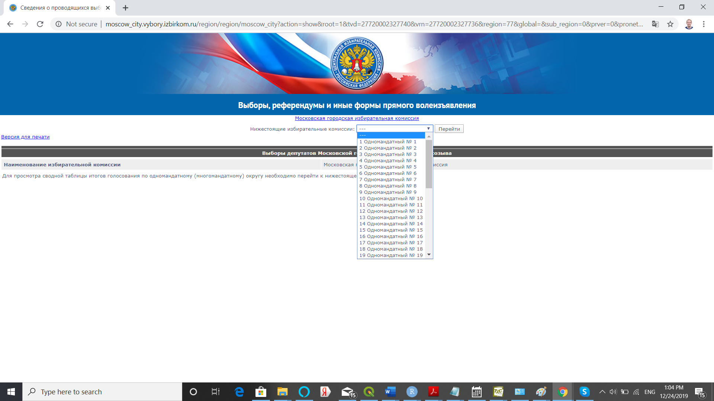
Picture 10 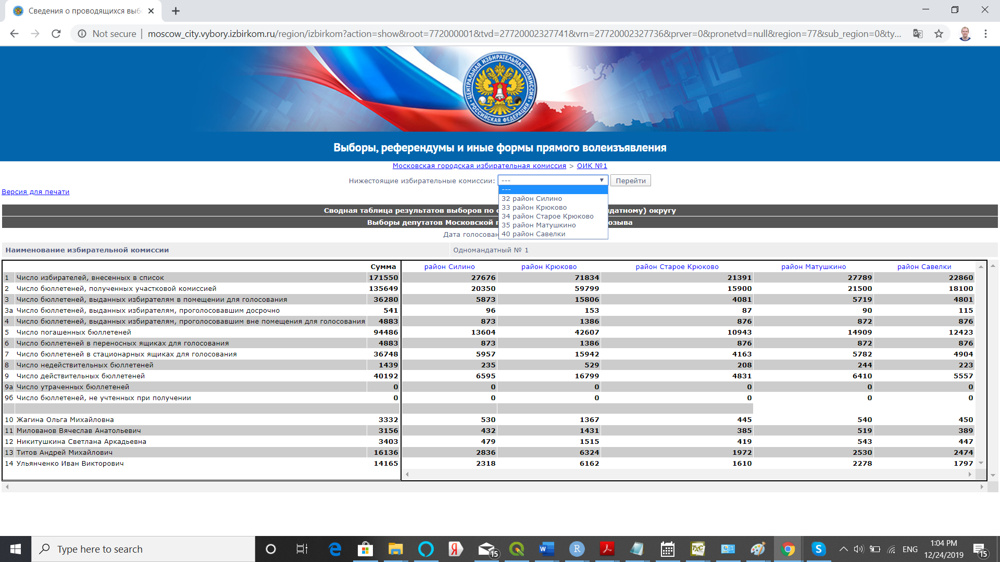
#Code Fragment
res2 <- listURLextractor(res1) #See Picture 9
res3 <- listURLextractor(res2) #See Picture 10
Picture 11 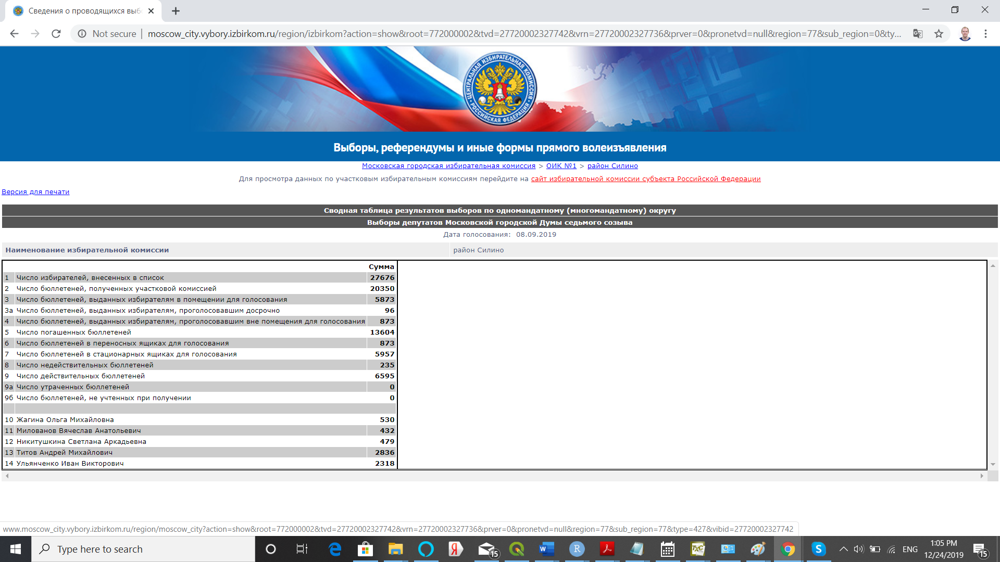
Picture 12 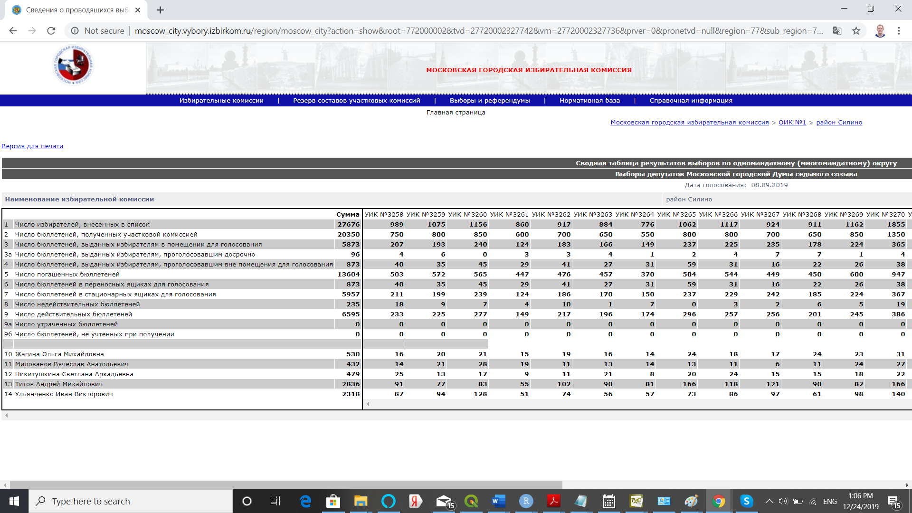
#Code Fragment
res4 <- rowURLextractor(res3, transliterate("сайт избирательной комиссии субъекта Российской Федерации")) #See Picture 11
res5 <- dataBuilder(res4, typedata = "fast", dnames = TRUE, bylevel="level3") #See Picture 12
#Full code
library(CECscraper)
library(dplyr)
###########################
#extracting electoral data#
###########################
url<-"http://www.vybory.izbirkom.ru/region/izbirkom?action=show&vrn=27720002327736®ion=77&prver=0&pronetvd=null" #See Picture 7 and Picture 8
res1 <- rowURLextractor(url, transliterate("Сводная таблица предварительных итогов голосования")) #See Picture 8
res2 <- listURLextractor(res1) #See Picture 9
res3 <- listURLextractor(res2) #See Picture 10
res4 <- rowURLextractor(res3, transliterate("сайт избирательной комиссии субъекта Российской Федерации")) #See Picture 11
res5 <- dataBuilder(res4, typedata = "fast", dnames = TRUE, bylevel="level3") #See Picture 12
#an alternative with pipe operator
res5 <- rowURLextractor(url, transliterate("Сводная таблица предварительных итогов голосования")) %>%
listURLextractor() %>%
listURLextractor() %>%
rowURLextractor(transliterate("сайт избирательной комиссии субъекта Российской Федерации")) %>%
dataBuilder(typedata = "fast", dnames = TRUE, bylevel="level3")
#############################
#extracting time information#
#############################
res1t <- rowURLextractor(url, transliterate("Данные об открытии помещений для голосования"))
res2t <- listURLextractor(res1t)
res3t <- listURLextractor(res2t)
res4t <- rowURLextractor(res3t, transliterate("сайт избирательной комиссии субъекта Российской Федерации"))
res5t <- dataBuilder(res4t, typedata = "fast", ttime = TRUE, dnames = TRUE, bylevel="level3")
#an alternative with pipe operator
res5t <- rowURLextractor(url, transliterate("Данные об открытии помещений для голосования")) %>%
listURLextractor() %>%
listURLextractor() %>%
rowURLextractor(transliterate("сайт избирательной комиссии субъекта Российской Федерации")) %>%
dataBuilder(typedata = "fast", ttime = TRUE, dnames = TRUE, bylevel="level3")
###############################
#merging electoral + time data#
###############################
res6 <- dataMerger(list(res5, res5t), byrow = FALSE)
res7 <- dataMerger(res6, byrow = TRUE)
#remove extra rows for rayons
res8 <- res7$data[grepl("^UIK", res7$data$link),]
###############################
#extracting info on candidates#
###############################
urlc <- "http://www.moscow_city.vybory.izbirkom.ru/region/region/moscow_city?action=show&root=1&tvd=27720002327740&vrn=27720002327736®ion=77&global=null&sub_region=0&prver=0&pronetvd=null&vibid=27720002327736&type=220"
resc <- scrapeCandidates(urlc)
library(CECscraper)
library(dplyr)
library(rvest)
webpage <- read_html("Inst/elections_federal.html") #See Picture 4 and Picture 5
res1 <- fileURLextractor(webpage, hashid = TRUE)
filter1<-paste(c(transliterate("Результаты выборов"), transliterate("Итоги голосования по федеральному округу")), collapse="|")
res2 <- rowURLextractor(res1[c(1:6,8),], filter1, select = 1)
res3 <- rowURLextractor(res1[7,], transliterate("Результаты выборов по федеральному избирательному округу"), select = 1)
resm <- rbind(res2, res3)
resm$level5 <- paste(resm$level1, resm$level4)
res3 <- dataBuilder(resm, ttime = FALSE, typedata = "slow", dnames = TRUE, bylevel="level5")
names(res3$data)
#Full code
library(CECscraper)
library(dplyr)
#Scrape SMD data
url2016<-"http://www.vybory.izbirkom.ru/region/izbirkom?action=show&global=1&vrn=100100067795849®ion=0&prver=0&pronetvd=0"
p0<-rowURLextractor(url2016, transliterate("Результаты выборов по одномандатному избирательному округу"), select=1)%>%
listURLextractor()%>%
listURLextractor()%>%
dataBuilder(typedata="slow", bylevel="link", ttime=FALSE, dnames=TRUE)%>%
dataMerger()
p1 <- t(p0$data)
p2 <- p1[-c(1:24),]
oiks <- p1[5,]
oiks_oik <- unlist(sapply(1:length(oiks), function(i){rep(oiks[i], sum(!is.na(p2[,i])))}))
oiks_num <- gsub("[^0-9.]", "", oiks_oik)
oiks_votes <- unlist(sapply(1:length(oiks), function(i){ p2[,i][!is.na(p2[,i])]}))
oiks_names <- as.character(names(oiks_votes))
candidates_data <- data.frame(oiks_oik, oiks_num, oiks_names, oiks_votes, stringsAsFactors = FALSE)
candidates_data$ind <- paste(candidates_data$oiks_names, candidates_data$oiks_num, sep="_")
oiks_num <- gsub("[^0-9.]", "", oiks)
electoral_info <- data.frame(cbind(oiks, oiks_num, t(p1[c(7:24),])), stringsAsFactors = FALSE)
#Scrape the data on candidate's party ID
candidates="http://www.vybory.izbirkom.ru/region/region/izbirkom?action=show&root=1&tvd=100100067795854&vrn=100100067795849®ion=0&global=true&sub_region=0&prver=0&pronetvd=0&vibid=100100067795849&type=220"
smd.candidates<-scrapeCandidates(candidates)
smd.candidates2<-subset(smd.candidates$data, select=c("FIO.kandidata", "Nomer.okruga", "Status.kandidata.4", "Sub.yekt.vydvizheniya"))
smd.candidates3<-smd.candidates$data[,c("FIO.kandidata", "Nomer.okruga", "Status.kandidata.4", "Sub.yekt.vydvizheniya", "Status uchastnika vyborov")]
smd.candidates3$ind<-paste(apply(smd.candidates3["FIO.kandidata"],1,as.character),
apply(smd.candidates3["Nomer.okruga"],1,as.character), sep="_")
#Merge the data
merged_data<-merge(candidates_data, smd.candidates3, by="ind")
merged_data2<-subset(merged_data, select=c("oiks_oik", "oiks_num", "oiks_names", "oiks_votes", "Sub.yekt.vydvizheniya"))
merged_data3<-merge(electoral_info, merged_data2, by="oiks_num")
#write.csv(merged_data3, "Russia2016_SMD.csv")